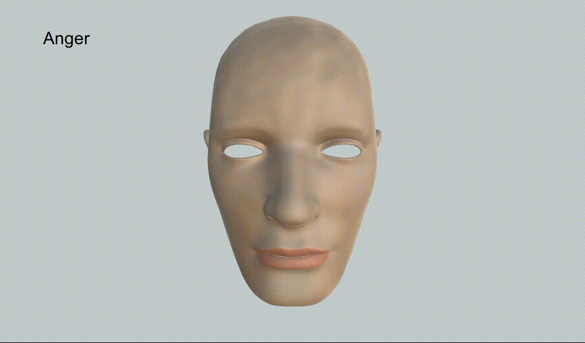
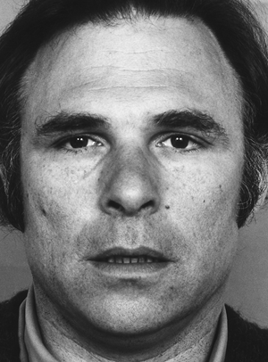

This is the final project for the “Sistemas Gráficos 3D” (3D Graphics Systems) course.

In this project, simple facial expression animation was implemented in Unity via a FaceManager.cs script on a mesh with Blendshapes for specific Action Units, specified by the Facial Action Coding System (FACS).
From another script, you can then use:
...
FaceManager fm;
void Start() {
...
fm = GetComponent<FaceManager>();
...
}
void Update() {
...
fm.ShowExpression(FaceExpression.Happiness, // facial expression
500, // animation duration (ms)
10, // apex duration (ms)
1); // intensity
...
}Additionally, the face can move its mouth to simulate speech, like so:
fm.StartSpeaking(750); // speech animation duration (ms)
...
fm.StopSpeaking(); // speech animation duration (ms)We need to produce an animation given the starting point and the final point along with the desired duration. A trivial solution is linear interpolation, but it doesn’t produce smooth movement when chaining expressions; in order to overcome this, we pass the output of the linear interpolation to a function \(f : [0, 1] \rightarrow [0, 1]\) such that:
For example:
Additionally, after finishing this animation, the face stays in “rest” for a given duration, forming the expression’s apex.
The Facial Action Coding System (FACS) developed by Paul Ekman encodes facial activity into Action Units (AUs); here are some examples:
| AU 0 | AU 1 | AU 2 | AU 25 |
|---|---|---|---|
| Neutral face | Raises the inner part of the eyebrows | Arches the eyebrows | Parts the lips |
|  |
In the current implementation, we use the following AUs (plus AU 0, which is the lack of any other AUs):
However, this is still not enough to determine the desired expression, given some emotion - for this, we use Emotional FACS (EM-FACS), which maps certain combinations of AUs to one of the six basic emotions:
The final facial expression is then determined by a lookup table based on EM-FACS, mapping each of the basic emotions to a list of activation weights for selected AUs, and then selecting the list of weights \(u\) that minimizes \(\lVert u - v \rVert_2\) where \(v\) are the current weights.
The interface has some details:
ShowExpression is called when an expression animation is in progress, the call will be added to a stack to be run once the current animation finishes;StopExpression(); - this is the same as ShowExpression(FaceExpression.Neutral, ...); but without adding to the expression stack;